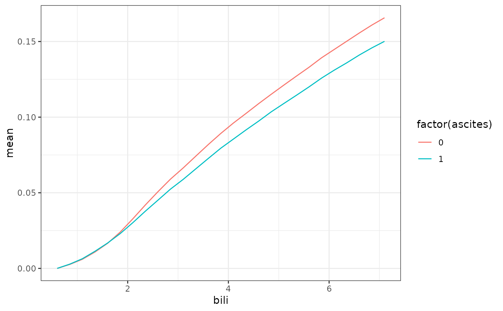

ORSF interactions
Arguments
- object
(aorsf) an oblique random survival forest (ORSF; see orsf).
- min_pairwise_obs
(integer) minimum number of observations where both variables were included in a linear combination together. The default is the number of trees in
objectdivided by the mean number of leaves in the trees. Default is the number of trees divided by the average number of leaves per tree, rounded to the nearest integer, i.e.,min_pairwise_obs = round(number of trees / mean(number of leaves)).
Details
min_pairwise_obs should be a single value and should be large
enough to prevent consideration of variable pairs that are so infrequently
used together that it would not make sense to consider them interacting.
For example, if two variables are only used together in one split of
an entire random forest (i.e., number of pairwise observations = 1),
it would not make sense to compute a correlation.
Examples
set.seed(329)
fit <- orsf(pbc_orsf, Surv(time, status) ~ . - id, n_tree = 2500)
intr <- aorsf:::orsf_interaction(fit)
# edema==1 and bili are strongest interacting pair
print(intr)
#> v1 v2 value
#> 1: edema_1 bili 9.516179e-02
#> 2: ascites_1 bili 8.722359e-02
#> 3: ascites_1 hepato_1 8.607192e-02
#> 4: hepato_1 edema_1 8.104954e-02
#> 5: edema_1 copper 7.484794e-02
#> ---
#> 149: albumin trig 2.276298e-04
#> 150: albumin ast 1.765690e-04
#> 151: age edema_0.5 1.683258e-04
#> 152: albumin alk.phos 1.303141e-04
#> 153: edema_0.5 ast 1.522985e-05
# make a list containing the variable values you
# want to compute partial dependence for
pd_spec <- list(edema = c("0", "0.5", "1"),
bili = seq(0.6, 7.1, by = 0.5))
# orsf_pd_summary automatically computes pd for all combinations
# in the list (this can be turned off with expand_grid = FALSE)
pd_data <- orsf_pd_summary(object = fit,
pd_spec = pd_spec,
expand_grid = TRUE)
# aligning predictions at lowest value of bili
min_ed_0 <- with(pd_data, mean[edema == "0" & bili == 0.6])
min_ed_1 <- with(pd_data, mean[edema == "0.5" & bili == 0.6])
min_ed_2 <- with(pd_data, mean[edema == "1" & bili == 0.6])
pd_data_aligned <-
within(pd_data, {
value <- mean
value[edema == "0" ] <- value[edema == "0" ] - min_ed_0
value[edema == "0.5"] <- value[edema == "0.5"] - min_ed_1
value[edema == "1" ] <- value[edema == "1" ] - min_ed_2
})
head(pd_data_aligned)
#> edema bili mean lwr medn upr value
#> 1: 0 0.6 0.2154799 0.01718182 0.1162081 0.7622311 0.000000000
#> 2: 0.5 0.6 0.2734275 0.04075219 0.1871151 0.7838840 0.000000000
#> 3: 1 0.6 0.3839478 0.16722234 0.3064889 0.8566843 0.000000000
#> 4: 0 1.1 0.2265615 0.02078347 0.1224758 0.7777483 0.011081691
#> 5: 0.5 1.1 0.2872575 0.04639360 0.1982758 0.7951350 0.013830014
#> 6: 1 1.1 0.3936647 0.17440193 0.3152310 0.8677766 0.009716911
library(ggplot2)
ggplot(pd_data_aligned) +
aes(x = bili, y = value, col = edema) +
geom_line() +
labs(y = 'Predictions centered at Bilirubin = 0.6',
x = 'Bilirubin',
title = 'Interaction between bilirubin and edema')
